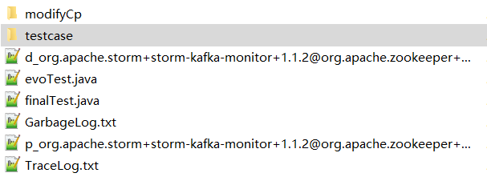

Project description
Riddle is a test generation tool to trigger the crashes caused by dependency conflict issues and collect the crashing stack traces to help developers examine the problems.
Background
Intensive use of libraries in Java projects brings potential risk of dependency conflicts, which occur when a project directly or indirectly depends on multiple versions of the same library or class. When this happens, JVM loads one version and shadows the others. Runtime exceptions can occur when methods in the shadowed versions are referenced. Although project management tools such as Maven are able to give warnings of potential dependency conflicts when a project is built, developers often ask for crashing stack traces before examining these warnings. It motivates us to develop RIDDLE, an automated approach that generates tests and collects crashing stack traces for projects subject to risk of dependency conflicts. RIDDLE, built on top of ASM and EVOSUITE, combines condition mutation, search strategies and condition restoration to trigger the crashes caused by dependency conflict issues.
How to use Riddle
Riddle takes a Maven based project (it should contain the complete Maven built project directory and file pom.xml) as input for analysis. The expected running environment is 64-bit Window operating system with JDK 1.8.As Maven built projects need to download dependencies from Maven Central Repository, Riddle cannot work offline.
You can run Riddle on subjects based on the following steps:
Step 1: Unzip the workspace_riddle.zip to local directory. Recommended directory structure is:
D:\workspace_riddle
├─apache-maven-3.2.5 Maven source code
├─jar Riddle source code
├─reportProject Java project under test
├─installscript.jar Install script file
├─batchScript.jar Script file used to reproduce experimental result
Step 2: Install Riddle.
Execute the following Windows CMD command to install Riddle :
java -jar D:\workspace_riddle\installScript.jar
Step 3: Generate test cases to examine the dependency conflict issues:
Execute the following Windows CMD command to run Riddle on project under test:
D:\workspace_riddle\apache-maven-3.2.5\bin\mvn.bat -f=D:\workspace_riddle\reportProject\storm-1.1.2\external\storm-kafka-monitor\pom.xml -DcallConflict="org.apache.zookeeper+zookeeper" -Dmaven.test.skip=true package neu.lab:riddle:1.0:gene –e
Then you can get the results in the specified directory (e.g., D:\workspace_riddle\tempWs).The result directory is shown as follows:
where
modifyCp is the directory containing the mutated source code
finalTest is the generated test cases
d_xxxxx is the document recording the distances from any entry method to any risky method
TraceLog is the log file recording the stack traces obtained by triggering the risky method
GarbageLog.txt is the Riddle execution log file
License
Riddle is released under the MIT License.
Environment
Window operating system & JDK 1.7 or 1.8
Reference
This project references the open source projects Soot, ASM, EVOSUITE.